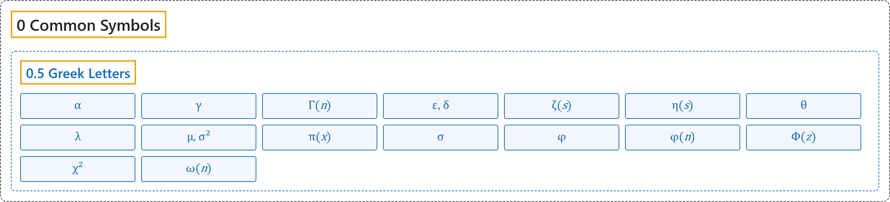

0.5 Greek Letters
Classification

Glossary
| Symbol | Description | 中文翻译 | Source |
|---|---|---|---|
| Mathematical Symbols 数学符号 |
(No definition) | （无定义） | Cohen et al., 2007 |
| 0 Common Symbols 常用符号 |
(No definition) | （无定义） | (none) |
| 0.5 Greek Letters 希腊字母 |
(No definition) | （无定义） | (none) |
| \(\alpha\) 显著性水平 |
"The significance level \(\alpha\) in hypothesis testing is the prescribed probability of rejecting the null hypothesis when that hypothesis is true." | 假设检验中的显著性水平 \(\alpha\) 是在原假设为真时拒绝原假设的规定概率。 | Weisstein, n.d., "significance level" entry |
| \(\gamma\) 欧拉-马斯刻若尼常数 |
"The Euler-Mascheroni constant \(\gamma\), sometimes also called 'Euler's constant' or 'the Euler constant' (but not to be confused with the constant e, whose value is \(2.718281...\)), is defined as the limit of the sequence \(\gamma = \lim_{n \to \infty}\left(\sum_{k=1}^{n} \frac{1}{k} - \ln n\right)\)" | 欧拉-马斯刻若尼常数 \(\gamma\)，有时也称“欧拉常数”（不要与值为 \(2.718281…\) 的常数 e 混淆），定义为数列的极限 \(\gamma = \lim_{n \to \infty}\left(\sum_{k=1}^{n} \frac{1}{k} - \ln n\right)\)。 | Weisstein, n.d., "Euler-Mascheroni constant" entry |
| \(\Gamma(n)\) 伽马函数 |
"The (complete) gamma function \(\Gamma(n)\) is defined to be an extension of the factorial to complex and real number arguments." | （完全）伽马函数 \(\Gamma(n)\) 定义为阶乘向复数和实数自变量的推广。 | Weisstein, n.d., "gamma function" entry; also in 3 Functions |
| \(\varepsilon,\ \delta\) ε-δ 定义 |
""for all neighborhoods \(U\) of \(y_0\) there is a neighborhood \(V\) of \(x_0\) such that, whenever \(x \in V\), then \(f(x) \in U\)" is rephrased as "for all \(\varepsilon > 0\) there is \(\delta > 0\) such that, whenever \(0 < \lvert x - x_0 \rvert < \delta\), then \(\lvert f(x) - y_0 \rvert < \varepsilon\)."" | “对 \(y_0\) 的每个邻域 \(U\)，存在 \(x_0\) 的邻域 \(V\)，使只要 \(x \in V\) 就有 \(f(x) \in U\)”被改写为“对所有 \(\varepsilon > 0\)，存在 \(\delta > 0\)，使只要 \(0 < \lvert x - x_0 \rvert < \delta\)，就有 \(\lvert f(x) - y_0 \rvert < \varepsilon\)。” | Weisstein, n.d., "epsilon-delta definition" entry |
| \(\zeta(s)\) 黎曼 ζ 函数 |
"The Riemann zeta function is denoted \(\zeta(s)\)" | 黎曼 ζ 函数记作 \(\zeta(s)\)。 | Weisstein, n.d., "riemann zeta function" entry |
| \(\eta(s)\) 狄利克雷 η 函数 |
"The Dirichlet eta function is the entire function \(\eta(s)\) whose series representation for \(\operatorname{Re}[s] > 0\) is \(\eta(s) = \sum_{k=1}^{\infty} \frac{(-1)^{k-1}}{k^s}\)" | 狄利克雷 η 函数是整函数 \(\eta(s)\)，它在 \(\operatorname{Re}[s] > 0\) 时的级数表示为 \(\eta(s) = \sum_{k=1}^{\infty} \frac{(-1)^{k-1}}{k^s}\)。 | Weisstein, n.d., "Dirichlet eta function" entry |
| \(\theta\) 角 |
"An angle \(\theta\) between two intersecting lines or line segments is the amount of rotation about their point of intersection (the vertex) required to bring one into correspondence with the other." | 两条相交直线或线段之间的角 \(\theta\)，是使其中一条与另一条重合所需绕交点（顶点）旋转的量。 | Weisstein, n.d., "angle" entry |
| \(\lambda\) 特征值 |
"If there is a vector \(X \in \mathbb{R}^n \neq 0\) such that \(AX = \lambda X\) for some scalar \(\lambda\), then \(\lambda\) is called the eigenvalue of \(A\) with corresponding (right) eigenvector \(X\)." | 如果存在向量 \(X \in \mathbb{R}^n \neq 0\)，对某个标量 \(\lambda\) 使 \(AX = \lambda X\)，则 \(\lambda\) 称为 \(A\) 的特征值，\(X\) 为对应的（右）特征向量。 | Weisstein, n.d., "eigenvalue" entry |
| \(\mu,\ \sigma^2\) 均值与方差 |
"A normal distribution in a variate \(X\) with mean \(\mu\) and variance \(\sigma^2\) is a statistical distribution with probability density function" | 变量 \(X\) 的正态分布以 \(\mu\) 为均值、\(\sigma^2\) 为方差，是具有如下概率密度函数的统计分布。 | Weisstein, n.d., "normal distribution" entry |
| \(\pi(x)\) 素数计数函数 |
"The prime counting function is the function \(\pi(x)\) giving the number of primes less than or equal to a given number \(x\)" | 素数计数函数是给出不大于给定数 \(x\) 的素数个数的函数 \(\pi(x)\)。 | Weisstein, n.d., "prime counting function" entry |
| \(\sigma\) 标准差 |
"The standard deviation \(\sigma\) of a probability distribution is defined as the square root of the variance \(\sigma^2\)" | 概率分布的标准差 \(\sigma\) 定义为方差 \(\sigma^2\) 的平方根。 | Weisstein, n.d., "standard deviation" entry |
| \(\phi\) 黄金比 |
"The golden ratio, also known as the divine proportion, golden mean, or golden section, is a number often encountered when taking the ratios of distances in simple geometric figures such as the pentagon, pentagram, decagon and dodecahedron. It is denoted \(\phi\), or sometimes \(\tau\)." | 黄金比，又称神圣比例、黄金均值或黄金分割，是在五边形、五角星、十边形和十二面体等简单几何图形中取距离之比时常遇到的数。它记作 \(\phi\)，有时记作 \(\tau\)。 | Weisstein, n.d., "golden ratio" entry |
| \(\phi(n)\) 欧拉函数 |
"The totient function \(\phi(n)\), also called Euler's totient function, is defined for a positive integer \(n\) as the number of positive integers \(\leq n\) that are relatively prime to (i.e., share no common divisor other than 1 with) \(n\)" | 欧拉函数 \(\phi(n)\) 对正整数 \(n\) 定义为不大于 \(n\) 且与 \(n\) 互素（即除 1 外没有公因数）的正整数的个数。 | Weisstein, n.d., "totient function" entry |
| \(\Phi(z)\) 正态分布函数 |
"The normal distribution function \(\Phi(z)\) is used here in the centered convention" | 正态分布函数 \(\Phi(z)\) 在这里采用中心化的约定。 | Weisstein, n.d., "normal distribution" entry |
| \(\chi^2\) 卡方分布 |
"If \(Y_i\) have normal independent distributions with mean 0 and variance 1, then \(\chi^2 = \sum_{i=1}^r Y_i^2\) is distributed as \(\chi^2\) with \(r\) degrees of freedom." | 若 \(Y_i\) 是均值为 0、方差为 1 的独立正态分布，则 \(\chi^2 = \sum_{i=1}^r Y_i^2\) 服从自由度为 \(r\) 的 \(\chi^2\) 分布。 | Weisstein, n.d., "chi-squared distribution" entry |
| \(\omega(n)\) 不同素因数的个数 |
"The distinct prime factors of a positive integer \(n \geq 2\) are defined as the \(\omega(n)\) numbers \(p_1\), ..., \(p_{\omega(n)}\) in the prime factorization" | 正整数 \(n \geq 2\) 的不同素因数定义为其素因数分解中的 \(\omega(n)\) 个数 \(p_1, …, p_{\omega(n)}\)。 | Weisstein, n.d., "distinct prime factors" entry |
References
Weisstein, E. W. (n.d.). Angle. MathWorld. Retrieved November 1, 2026, from https://mathworld.wolfram.com/Angle.html
Weisstein, E. W. (n.d.). Chi-squared distribution. MathWorld. Retrieved November 1, 2026, from https://mathworld.wolfram.com/Chi-SquaredDistribution.html
Weisstein, E. W. (n.d.). Dirichlet eta function. MathWorld. Retrieved November 1, 2026, from https://mathworld.wolfram.com/DirichletEtaFunction.html
Weisstein, E. W. (n.d.). Distinct prime factors. MathWorld. Retrieved November 1, 2026, from https://mathworld.wolfram.com/DistinctPrimeFactors.html
Weisstein, E. W. (n.d.). Eigenvalue. MathWorld. Retrieved November 1, 2026, from https://mathworld.wolfram.com/Eigenvalue.html
Weisstein, E. W. (n.d.). Epsilon-delta definition. MathWorld. Retrieved November 1, 2026, from https://mathworld.wolfram.com/Epsilon-DeltaDefinition.html
Weisstein, E. W. (n.d.). Euler-Mascheroni constant. MathWorld. Retrieved November 1, 2026, from https://mathworld.wolfram.com/Euler-MascheroniConstant.html
Weisstein, E. W. (n.d.). Gamma function. MathWorld. Retrieved November 1, 2026, from https://mathworld.wolfram.com/GammaFunction.html
Weisstein, E. W. (n.d.). Golden ratio. MathWorld. Retrieved November 1, 2026, from https://mathworld.wolfram.com/GoldenRatio.html
Weisstein, E. W. (n.d.). Normal distribution. MathWorld. Retrieved November 1, 2026, from https://mathworld.wolfram.com/NormalDistribution.html
Weisstein, E. W. (n.d.). Prime counting function. MathWorld. Retrieved November 1, 2026, from https://mathworld.wolfram.com/PrimeCountingFunction.html
Weisstein, E. W. (n.d.). Riemann zeta function. MathWorld. Retrieved November 1, 2026, from https://mathworld.wolfram.com/RiemannZetaFunction.html
Weisstein, E. W. (n.d.). Significance level. MathWorld. Retrieved November 1, 2026, from https://mathworld.wolfram.com/SignificanceLevel.html
Weisstein, E. W. (n.d.). Standard deviation. MathWorld. Retrieved November 1, 2026, from https://mathworld.wolfram.com/StandardDeviation.html
Weisstein, E. W. (n.d.). Totient function. MathWorld. Retrieved November 1, 2026, from https://mathworld.wolfram.com/TotientFunction.html
Cohen, E. R., Cvitaš, T., Frey, J. G., Holmström, B., Kuchitsu, K., Marquardt, R., Mills, I., Pavese, F., Quack, M., Stohner, J., Strauss, H. L., Takami, M., & Thor, A. J. (2007). Quantities, units and symbols in physical chemistry (3rd ed., 2nd printing 2012). IUPAC; RSC Publishing. https://iupac.org/wp-content/uploads/2019/05/IUPAC-GB3-2012-2ndPrinting-PDFsearchable.pdf